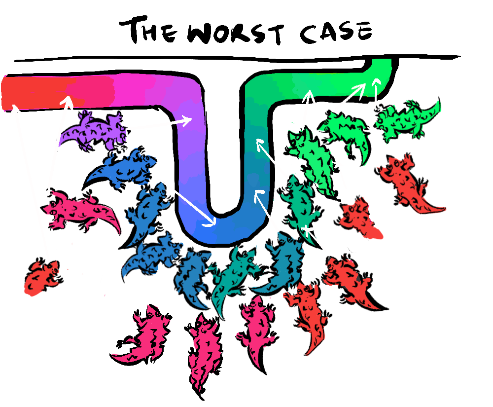
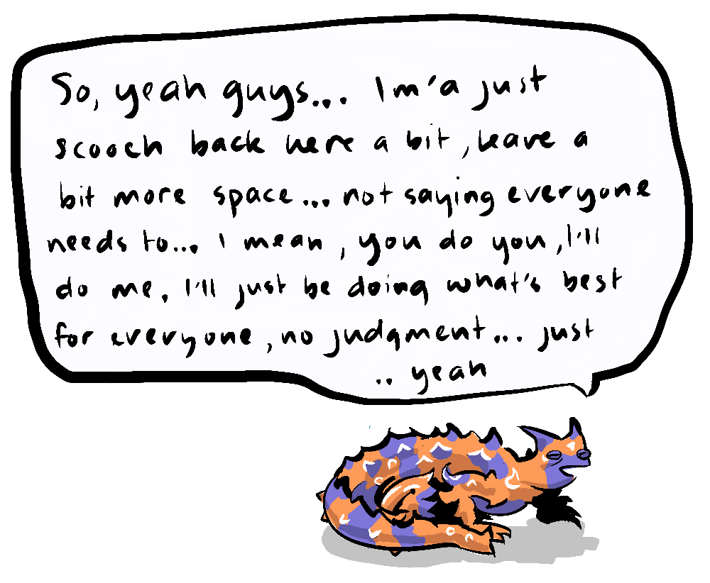
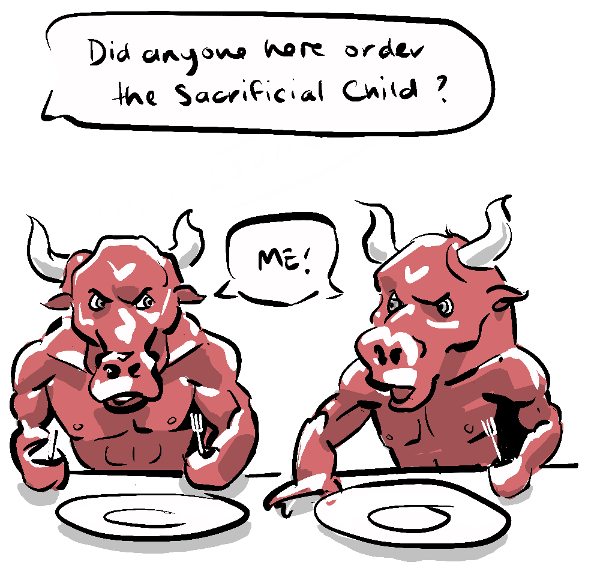
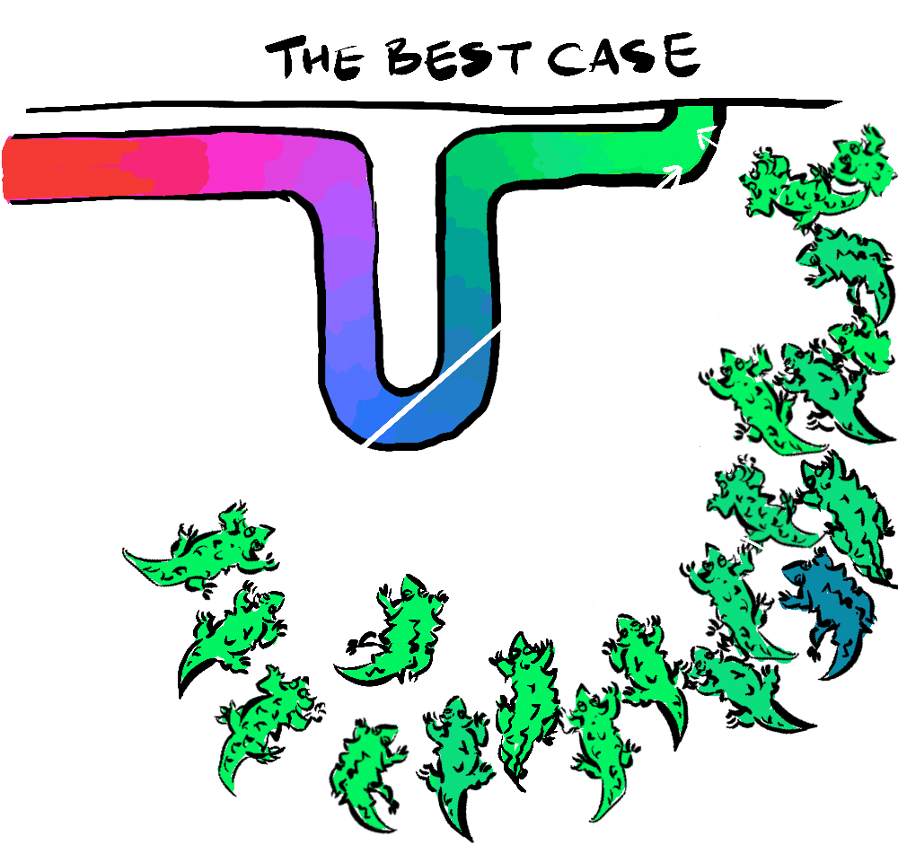
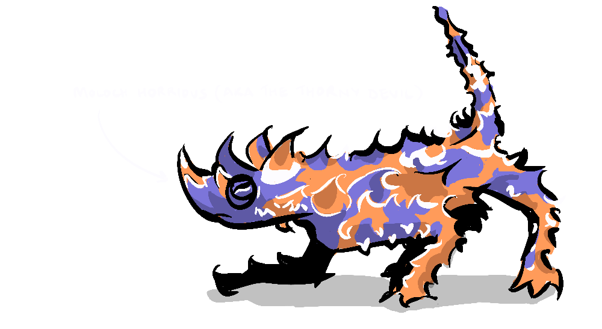

So, I recently came across an interview with an astrophysicist and former professional poker player who read an article about an old poem about an even older god, which may or may not be either an even older mythical creature or potentially an even older word, which represents a particular type of negative-sum game, and that particular type of negative-sum game is very relevant right now.
The god in question is the namesake of this here post—Moloch, or Molech as the case may be. But before we get to that, welcome to the Moloch Inter-Dimensional Spaceport baggage claim...

For the Thorny Devils arriving at the Moloch Inter-Dimensional Spaceport baggage claim, it takes forever to retrieve their bags, because a few of these prickly characters insist on crowding the conveyor, blocking the vision and the path of those stuck behind them. Those in front still have to wait for their bag to come to their spot on the conveyor, while those behind have to wait til their bag reaches the very end of the conveyor where they might have a chance to push past and retrieve their bag before it vanishes back into the mouth of the beast, some can't see anything, and those at the front, having retrieved their bags, are trapped by the horde behind them.

For each of these woe-some souls, all they want is to get their bag and get to the taxi stand, but no one is leaving any time soon.
Who is to blame for this situation? Moloch.
Moloch is a nasty character. He appears in John Milton's Paradise Lost as the most bloodthirsty of all the fallen angels and is named in the Bible as a Canaanite god associated with child sacrifice. But there is some confusion over whether Moloch is a god or merely the personification of the Punic word for sacrifice which is "Mlk" or perhaps is a combination of the Hebrew words for king "Melech" combined with the word for shame "bōšet". There are also many parallels between the bona fides of Moloch and the Ancient Greek Minotaur. Both have a bull's head on a man's body and the fury of both are only appeased by ritual sacrifice. So, as with many myths, the origins are hazy.

Moloch is conceived as a tyrannical god that demands child sacrifice, threatening far worse if his hunger is not satisfied. In game theoretical terms, the negative payoff of losing his support, or worse courting his ire, makes yielding to the tyrant's demands the optimal strategy, but in doing so the victims keep the monster alive, so they can never escape this perpetual negative-sum game.
It is the fact that the population are complicit in their own subjugation, which is the essence of a Molochian system. Like our unfortunate friends at the Moloch Inter-Dimensional Spaceport.
The concept of Moloch has been recently popularised by Liv Boeree (that astrophysicist poker star mentioned in the first paragraph) in her works on The Beauty Wars and The Media Wars where she explores the emergence of moloch-y situations borne of instagram beauty filters and The Media.
"I call Moloch the God of Negative-Sum Games"—Liv Boeree
As technology creates more opportunities for systems built of multiple free agents to arise, it has become important to recognise when they involve perverse incentives that drive individuals to act against their own long-term best interests or the best interests of the group.
Boeree discovered the concept through an article called Meditations on Moloch by Scott Alexander which was an exploration of the poem Howl by Allen Ginsberg which seems to use Moloch as a metaphor for the evils of modernity and capitalism. Alexander uses the poem to flesh out the metaphor of Moloch, drawing from numerous sources. I recommend reading the article and I intend to write about it in greater detail in a later part. For now it's enough to say Moloch is a metaphor that's in the Zeitgeist, and for good reason, because it helps us to understand the challenges we face as an increasingly global society with hopefully increasing individual freedoms.
Sometimes we might notice that a system so inevitably leads to downfall that it seems to be designed to fail. By personifying the concept of Moloch it helps us to connect that feeling about the pernicious nature of a particular system to a mental shorthand...
Once we have put a name and face to the issue we can interrogate it and devise an escape from it, like stepping back from the crowd at the baggage claim.
Perhaps you have found yourself at the Moloch Inter-Dimensional Spaceport baggage claim and observed one or two lizard brains start to crowd the conveyor, and suddenly half the passengers are scrambling for a space while the rest of you throw up your claws in despair. Moloch's victims are just trying to get their bag as quickly as possible, but the result is that it takes longer for everyone. However, it's not always the case.

Often we experience baggage claim Utopia where each person waits behind the yellow line. They spread out, giving everyone good visibility on the conveyor, and leaving enough space for whoever spots their bag to dash in, grab it and get out again. That's because people generally understand the system, we've had positive and negative experiences and have learned to act in unison. This is how we escape Molochian situations and the faster we learn to spot them the quicker we'll learn to work together to solve them.
Molochian situations are all around us, where rational decisions made by unwitting individuals can lead to negative outcomes. And Moloch is a suitably abhorrent personification that can help us develop a recognition of these systems and recoil from them accordingly. Understanding these systems allows us to make sure we're not a part of the problem but rather, like our baggage claim Utopia, part of the solution. And there are always solutions, they just require us to look at the bigger picture and ask, who is controlling this situation? Us, or Moloch?
